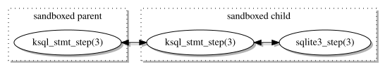
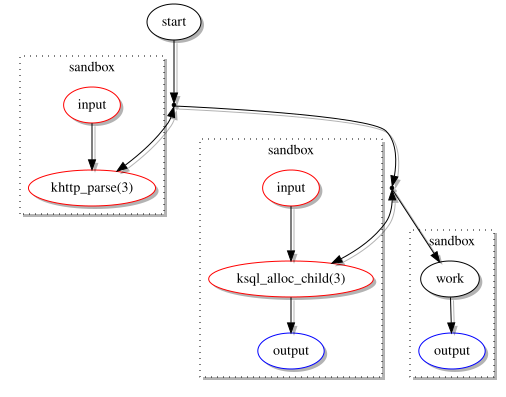

tl;dr: the new split-process mode of ksql constrains SQLite database operations to a child process, allowing the caller to pledge(2) better.
I use SQLite a lot because managing a big
database is a pain in
the ass and my database needs are few. Most of these uses are within small to medium-size web
applications, so security (see web
) is very important.
One thing that bothers me security-wise about using SQLite is that it opens files during run-time. The main database might be opened immediately, but auxiliary files (WAL, journal, etc.) might be opened at any time. And according to the documentation, even the names and locations of these files aren't fixed (although bapt has implemented a clever solution for keeping files under the same root). Take a WAL mode example…
% ls -l /var/www/data/ total 604 -rw-rw-rw- 1 root daemon 220160 Dec 12 2016 cgi.db -rw-rw-rw- 1 www daemon 32768 Dec 12 2016 cgi.db-shm -rw-rw-rw- 1 www daemon 30424 May 3 2016 cgi.db-wal
One database, one shared-memory file, one WAL file.
The database is created beforehand; the latter two are created on demand.
(Note: /dev/null may also be required…)
So what's the problem?
The run-time files prevent me from using pledge intelligently within my
applications, as I must accommodate for opening (and processing) new files.
In most web applications, stdio is the only promise that's required by the CGI bits.
(CGI and FastCGI communicate over pre-opened descriptors.)
But because of SQLite, I need to let in a whole lot more.
1 /* 2 * Required to create database temporary files, read and write from 3 * them, and perform file-system operations (flock and fattr). 4 */ 5 6 if (pledge("stdio rpath cpath wpath flock fattr", NULL) == -1) 7 err(EXIT_FAILURE, "pledge");
Not good! It's true that new processes can't be launched, nor can sockets be opened, but the database (and all other databases in the web server's root) are open for exploitation. Surely we can do better?
A few years ago, I wrote ksql to mandate that database access
errors should cause program termination, and program termination should safely close the database.
One too many times, a database error had been ignored from sloppy programming and had caused mysterious
failures—fool me once
…
It occurred to me that I could extend the system to use the same model as in kcgi: constraining the vulnerable database access in
a child process.
Something like…
1 if (socketpair(AF_UNIX, SOCK_STREAM, 0, fd) == -1) 2 err(EXIT_FAILURE, "socketpair"); 3 4 if ((pid = fork()) == -1) 5 err(EXIT_FAILURE, "fork"); 6 7 if (pid == 0) { 8 close(fd[1]); 9 if (pledge("stdio rpath cpath wpath flock fattr", NULL) == -1) 10 err(EXIT_FAILURE, "pledge"); 11 /* Exchange data with master over fd[0]. */ 12 exit(EXIT_SUCCESS); 13 } 14 15 close(fd[0]); 16 /* Exchange data with database over fd[1]. */ 17 if (pledge("stdio", NULL) == -1) 18 err(EXIT_FAILURE, "pledge");
This way, a constrained child process would manage the database.
The master process, enacting my web application's business logic
, would be completely sandboxed
and unable to access the database except over a communication socket.
Since ksql wraps a small subset over the SQLite C API, it's manageable to enable each function individually. Only about 30 functions need to be fitted with split-process bits.

For the time being, the protocol is an overly simple (read: slow and inefficient) one: open a non-blocking socket pair, fork, pass the pair to the child and parent. The child then opens and works with the database with a pledge(2) set for file access. (In the event that the original single-process model is used, none of this overhead is invoked.)
Following invocation, the parent caller usually will pledge for stdio and whatever else is
required by the application.
All in all, this roughly doubled the code-base size. See it for yourself in ksql.c (available as of the 0.1.0 release). The only bits needed to enable split-process mode are calling ksql_alloc_child(3) instead of ksql_alloc(3) on initialisation.
For example, the following simple application opens the database, then sandboxes itself. Note that the ksql functions aren't checked for errors since the default behaviour is to exit on database errors. (Technically the calls to ksql_close(3) and ksql_free(3) are superfluous, but let's be tidy.)
1 int 2 main(void) 3 { 4 struct ksql *sql; 5 struct ksqlstmt *stmt; 6 size_t i; 7 char buf[64]; 8 uint32_t val; 9 10 if ((sql = ksql_alloc_child(NULL, NULL, NULL)) == NULL) 11 errx(EXIT_FAILURE, "ksql_alloc_child"); 12 13 if (pledge("stdio", NULL) == -1) 14 err(EXIT_FAILURE, "pledge"); 15 16 ksql_open(sql, "test.db"); 17 18 ksql_stmt_alloc(sql, &stmt, "INSERT INTO " 19 "test (foo,bar) VALUES (?,?)", 1); 20 for (i = 0; i < 10; i++) { 21 val = arc4random(); 22 snprintf(buf, sizeof(buf), "%" PRIu32, val); 23 ksql_bind_int(stmt, 0, val); 24 ksql_bind_str(stmt, 1, buf); 25 ksql_stmt_step(stmt); 26 ksql_stmt_reset(stmt); 27 } 28 ksql_stmt_free(stmt); 29 ksql_close(sql); 30 ksql_free(sql); 31 32 return EXIT_SUCCESS; 33 }
A much more reasonable sandbox.
In a web application that combines kcgi and ksql, both the parsing of validation of data
and database import and export are all performed separately from the main CGI script.
So all vulnerable
operations (touching network, touching files—the attack surface being
coloured in red) of such applications are now limited to sandboxed child processes.

Not only does this protect your application from bad input, it also protects your database from you!
I've already added the functionality to openradtool
(this system was discussed here) as of 0.2.8 to make this even easier
to use. Assuming we've generated a database API exporting the usual db_open
function…
1 int 2 main(void) 3 { 4 struct kreq r; 5 const char *pages = "index"; 6 7 if (khttp_parse(&r, NULL, 0, &pages, 1, 0) != KCGI_OK) 8 errx(EXIT_FAILURE, "khttp_parse"); 9 10 if ((r.arg = db_open("/data/foo.db")) == NULL) 11 errx(EXIT_FAILURE, "db_open"); 12 13 if (pledge("stdio", NULL) == -1) 14 err(EXIT_FAILURE, "pledge"); 15 16 /* Perform actions in a sandbox. */ 17 18 db_close(r.arg); 19 khttp_free(&r); 20 return EXIT_SUCCESS; 21 }
What can be improved in ksql's split-process model? A lot.
For starters, the protocol can be significantly (make that significantly
) improved.
Right now, it has a lot of reads and writes that can be consolidated into one: a header frame with most
data, followed by additional data in the event of strings.
In fact, any request can be limited to two transmissions: a header frame and a data frame.
Most requests will only have the header.
(Those with string or blob values will need the extra frame.)
It's also rather easy to add other sandboxes. But since I generally only use OpenBSD, I'm not there yet!